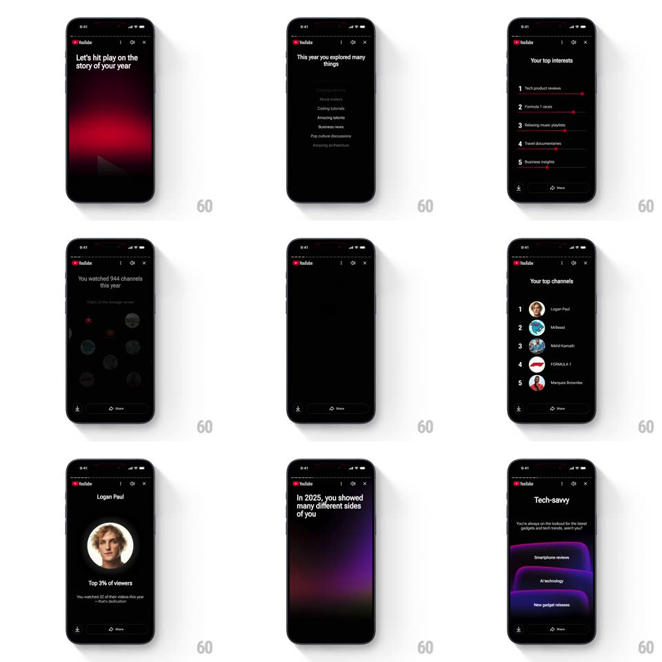

Media
Frame-by-frame

Rebuild this animation 1:1: YouTube Recap's story sequence - floating channel-avatar clouds, animated interest-ranking sliders, and the glowing "Tech-savvy" badge card, paged like stories with a progress rail.

Rebuild this animation 1:1: YouTube Recap's story sequence - floating channel-avatar clouds, animated interest-ranking sliders, and the glowing "Tech-savvy" badge card, paged like stories with a progress rail. ## Integration Integration: stack-agnostic spec - springs given as stiffness/damping, timed motions as duration + curve; map every value to your framework and animation library of choice. ## Scene YouTube Recap stories, black with faint aurora gradients: a story progress rail (segment dots) top. Steps: "Let's hit play on the story of your year"; "This year you explored many things" with a blurred interest list sharpening; "Your top interests" as ranked bars (1 Tech product reviews, 2 Formula 1 races, ...); "You watched 944 channels this year / That's 2x the average viewer" over a floating cloud of channel avatars; "Your top channels" ranked list with avatars; "There was one channel you really showed up for" with a hero avatar; the "Tech-savvy" badge card with glowing purple chips (Smartphone reviews, AI technology, New gadget releases). Download and Share icons sit at the bottom. ## Motion spec Pattern: multi-step recap story with avatar clouds, animated rank sliders, and a glowing badge reveal. - Steps auto-advance every ~4s (tap right edge to skip, left to go back); the progress rail fills per segment in real time. - Text steps: headline fades up word-group by word-group (300ms, 120ms apart). - "Your top interests": each ranked bar draws from zero to its value (600ms, ease-out, 120ms stagger down the ranks) with its label fading in as the bar starts. - The channels step: avatar bubbles float in from the edges (spring ~400/18, staggered 40ms, random edge origins) and idle-drift (+/-5px, 3s loops) while the count ticks up to 944 (1s, ease-out) and "2x the average viewer" fades after. - "Your top channels": rows slide in ranked (200ms, 90ms stagger), each avatar popping (scale 0.6 -> 1, spring ~450/16). - The badge step: the card rises (spring ~320/20), its chips glow in sequence (purple bloom opacity 0 -> 1, 300ms each, 150ms apart), and a soft rim light sweeps the card edge once. ## Calibration - Aurora gradients drift slowly (20s hue cycle) behind every step - the backdrop is alive but quiet. - Avatars are circular and borderless; ranks are plain numerals, not badges. ## Reduced motion Steps crossfade; bars and counts appear at final values; no floating. ## Don't miss - The 944 count must tick - an instant number loses the scale of it. - Share/Download stay fixed at the bottom through every step.